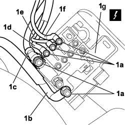
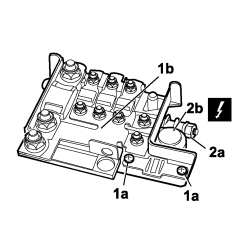

5530B40 SUPPLY BOX ON BATTERY (LINK BATTERY AND FUSE BOX) - R R
- Path
- Procedures > 55 ELECTRICAL EQUIPMENT > 5530 CURRENT GENERATION > 5530B BATTERY AND LEADS > 5530B40 SUPPLY BOX ON BATTERY (LINK BATTERY AND FUSE BOX) - R R
- Kind
- repair procedure (removal / refitting; the operation number is the code)
- Applies to
- all engines; all production periods
- Interactive page
- https://sloeber94.github.io/elrnDB-fCrm/en/#/194000722
Applies to: all engines; all production periods
 Removing
Removing
 Refitting
Refitting- Turn the ignition key to the OFF position and extract it.
- Open the bonnet.
- Disconnect the negative battery terminal.
Description | Connector | |
|---|---|---|
- | BATTERY |
- Remove the power supply casing protective cover.
1. Undo nuts (1a) fixing the electrical connections (1b, 1c, 1d, 1e, 1f) to the power supply casing (1g) on the battery and disconnect the connections.

Applies to: all engines; all production periods
1. Undo bolts (1a) fixing the supply box (1b) to the battery.
2. Undo the nut (2a) fixing the positive terminal (2b) and remove the supply box from the vehicle.
Description | Connector | |
|---|---|---|
2b | MAXI FUSE BOX ON BATTERY |

Applies to: all engines; all production periods
Refitting
Removing- Check that the supply box (link battery and fuse box) is not damaged and there is no oxidation.
- If necessary, carry out continuity tests.
- Position the supply box (link battery and fuse box) on the battery and tighten the nut fixing the positive terminal to the battery.
Description | Connector | |
|---|---|---|
- | MAXI FUSE BOX ON BATTERY |
- Tighten the bolts securing the power supply casing to the battery.
- Connect the electrical connections to the power supply casing and secure with nuts.
Description | Connector | |
|---|---|---|
- | MAXI FUSE BOX ON BATTERY |
- Fit the power supply casing protective cover.
- Connect the negative battery terminal.
Description | Connector | |
|---|---|---|
- | BATTERY |